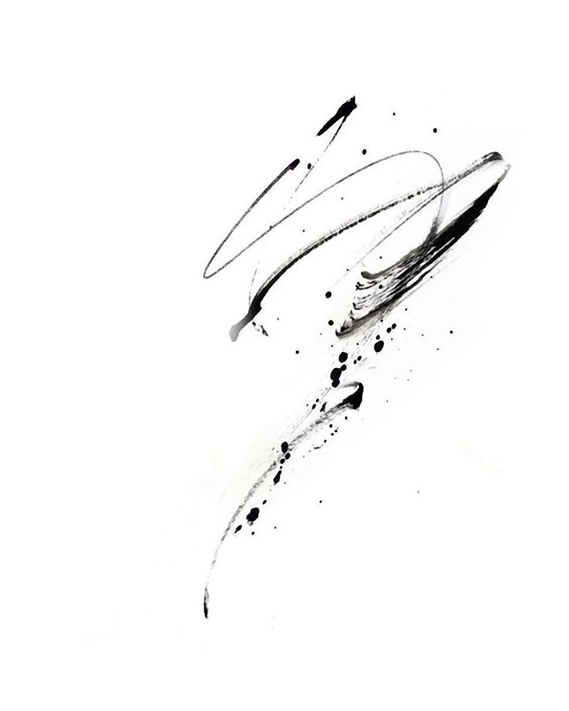

u mnie nie ma „nie wiem", jest „sprawdzę, przetestuję i zrobię".
Pracuję w oparciu o dyscyplinę, nie chwilową inspirację, bo tylko system daje powtarzalny efekt.
Łączę marketingowe myślenie z mocnym wizualem, dzięki czemu obraz nie jest pustą estetyką, tylko narzędziem.
Swobodnie pracuję po ukraińsku, polsku i angielsku, realizując projekty zarówno lokalne, jak i międzynarodowe.
Od kilku lat żyję w świecie wideo. Nagrywam, montuję, składam dźwięk i dopasowuję treść tak, żeby materiał był gotowy do konkretnej platformy, nie „byle gdzie wrzucony".
W moim portfolio są gastro, projekty kreatywne, kursy edukacyjne i marki osobiste. Różne branże, jeden wspólny mianownik — obraz ma działać, nie tylko wyglądać.
Premiere Pro i After Effects to dla mnie narzędzia, nie wyzwanie. Od prostych, dynamicznych Reelsów po dłuższe formy z historią i klimatem.

Żeby było tempo. Żeby napisy nie były przypadkowe. Żeby dźwięk robił klimat. Żeby to miało pazur, ale nie było przesadzone.
Okej. Zrobimy to tak, żeby naprawdę przyciągało uwagę.
Fotografia, która
zatrzymuje spojrzenie.